Kai-Hung
Chuang
A decade of independent execution owning the gap between new designs and first working hardware. Self-funded from day one — every prototype had real consequences, every production decision had to justify itself against cost and time. Business Administration degree grounding engineering decisions in economic reality. Hands-on across CNC machining, composites, welding, additive manufacturing, and electronics integration.
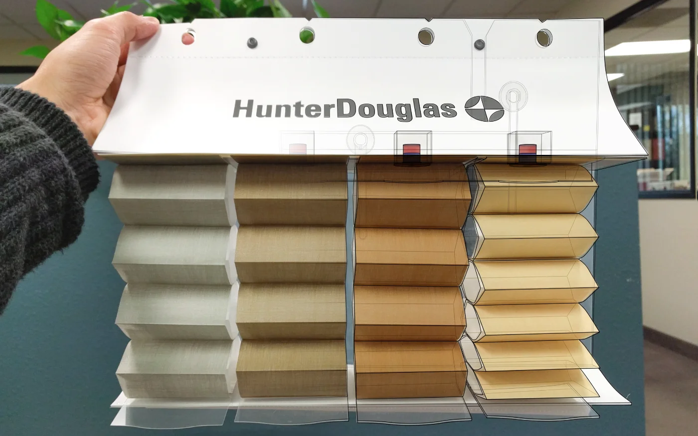
$6M launch. 60 days out.
Client design failed. No CAD. No budget.
Hunter Douglas's halo product was 60 days from a nationwide retail launch. 24,000 books mid-production. The accessory they'd developed for two years failed validation at the final hour with no native CAD and no specs provided. The Business Administration degree kept the solution grounded in economic reality. The engineering background built it. Both were required to ship.
Full documentation: every prototype stage, the 20+ failed concepts, the parking lot breakthrough, the 20-minute proof-of-concept, and the path from physics validation to 24,000 production units.
Core Projects
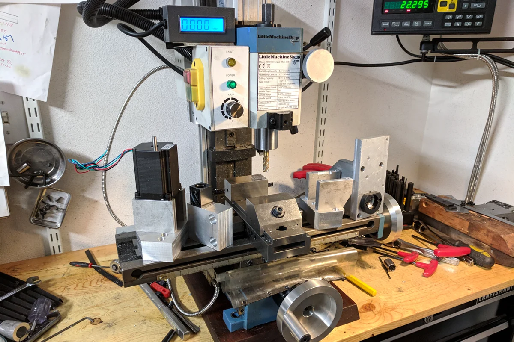
Three X2 mini mills. Learned manual milling on the first. Built a super mill with DRO from digital calipers, ball screws, and a car window motor power feed. Then machined every bracket for the CNC conversion on the machine I built. The tooling built the tooling.
↗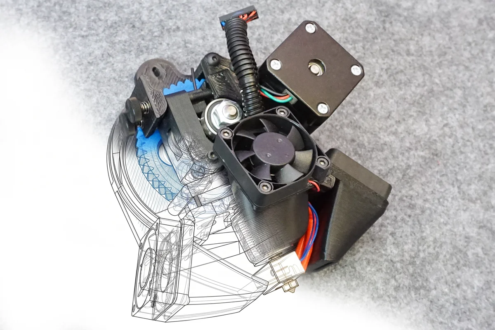
Ground-up redesign of a deployed industrial platform. Custom billet fixture to machine hobbed drive gears. Scaled to 2,000+ units across three SKUs. Out-competed the OEM's own subsequent release in the aftermarket.
↗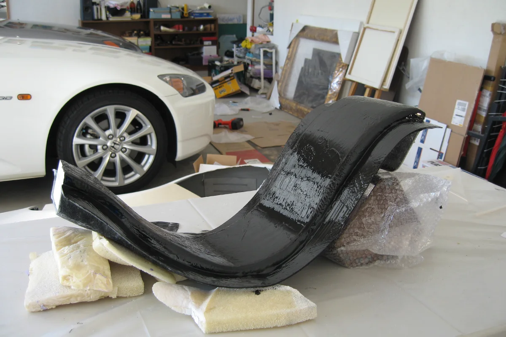
Metal shaping, 9-part mold making, vacuum-bagged carbon fiber, backyard paint booth. Every part built because the commercial option was too expensive, too ugly, or didn't exist.
↗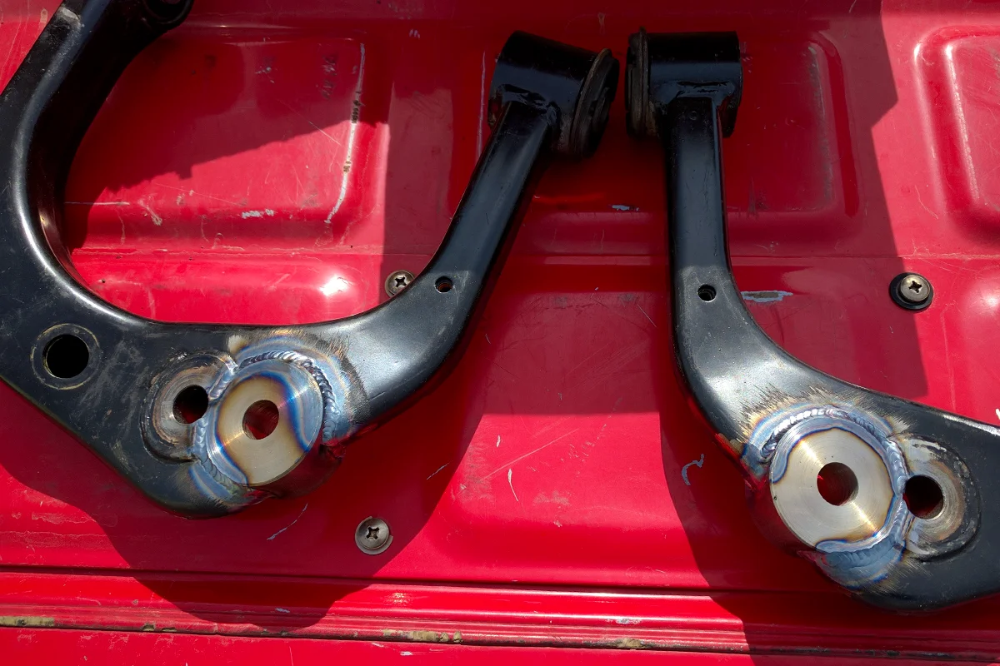
Lifted the Tacoma. Lost steering return. Modeled factory suspension in SolidWorks, calculated the correction delta, turned new ball joint couplings on the lathe, milled pockets into factory arms. Factory spec on first alignment attempt.
↗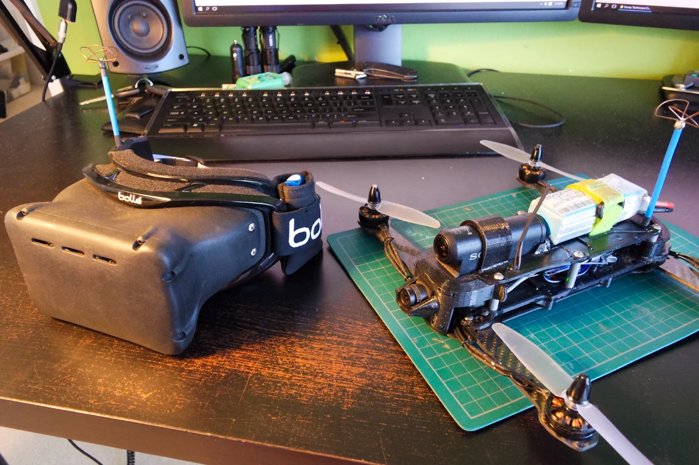
Five airframe iterations across full build-fly-evaluate cycles. Complete custom goggle system built from component level when commercial options failed requirements. Full stack owned: operator interface through airframe.
↗
Proposed rotating the flying gantry 180°. The Voron team incorporated it. Every Voron built since uses the layout I suggested. Reverse-engineered their entire STL library to parametric CAD to implement my own improvements.
↗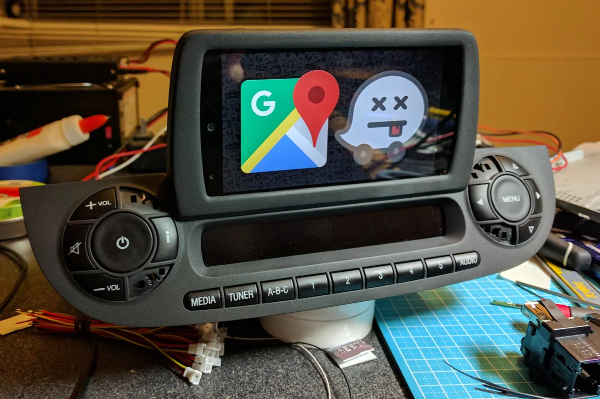
Three cars, three packaging constraints. Body filler bezels to CAD-designed enclosures. Custom firmware, relocated hardware, context-aware automation, NFC data transfer. Each generation solved what the previous couldn't.
↗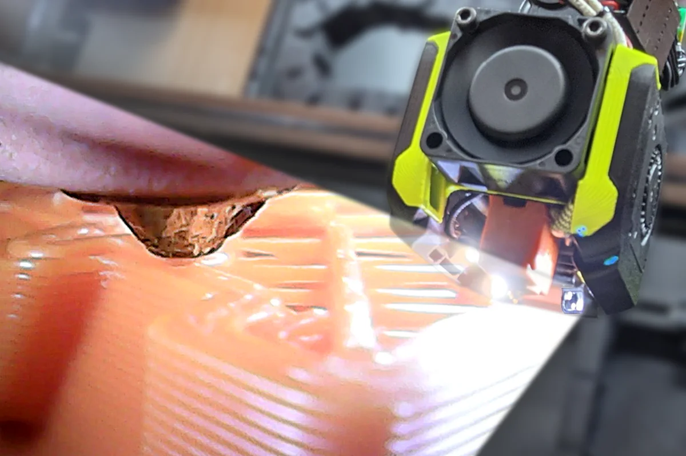
Miniature sensor payload operating at 250°C proximity in continuous kinematic motion. Hacked endoscope optics repositioned for thermal isolation. Redesigned SMD LED illumination. Community-adopted standard. Later commercialized by others.
↗Build Depth
Not every build needs a full page. Click any item to open the full engineering record.
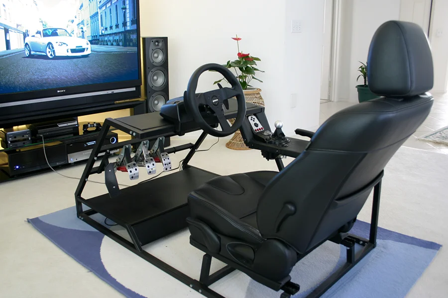
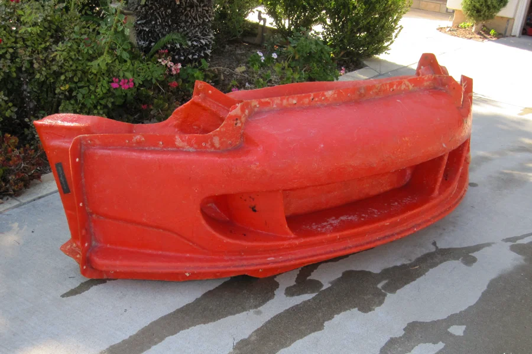
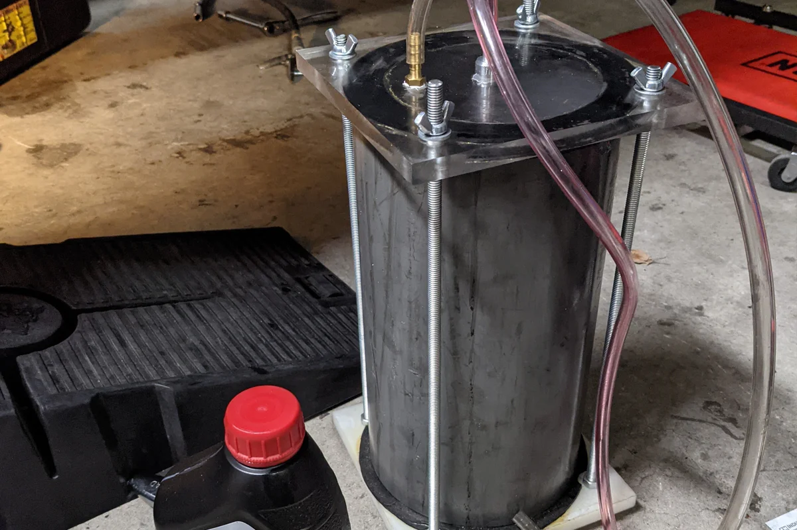
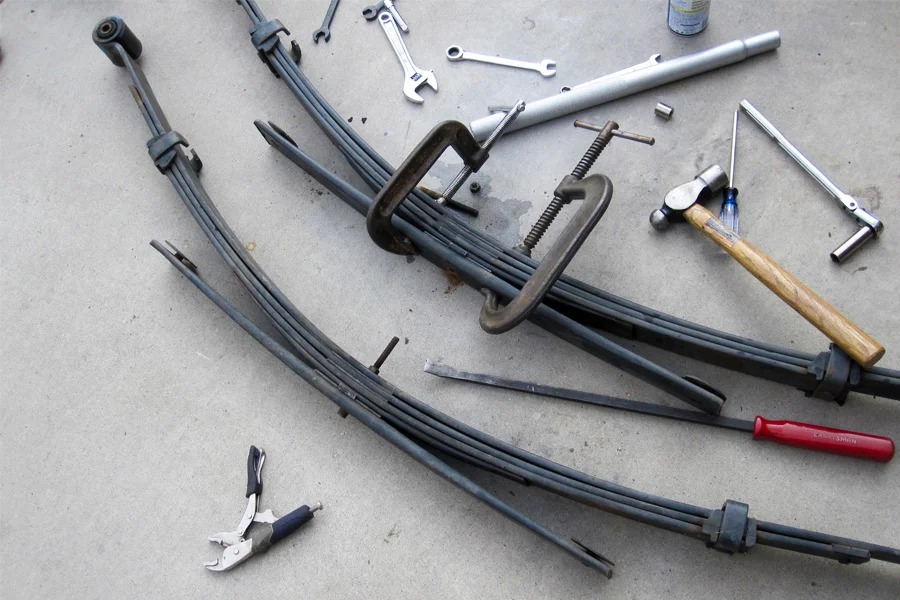
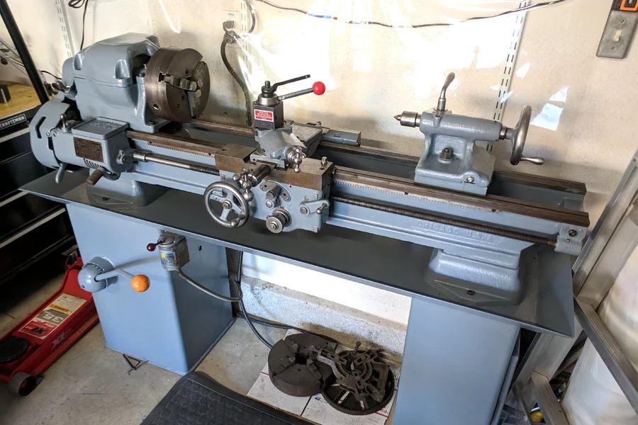
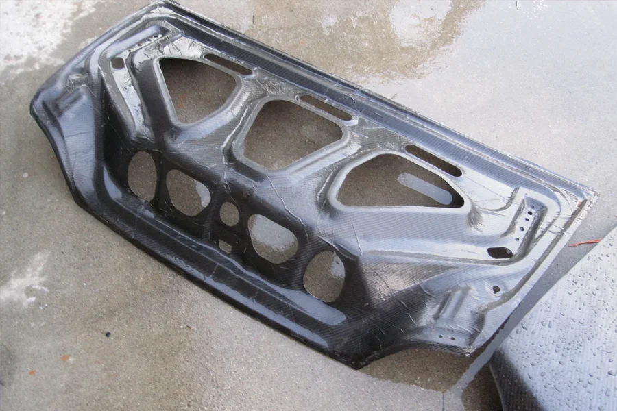
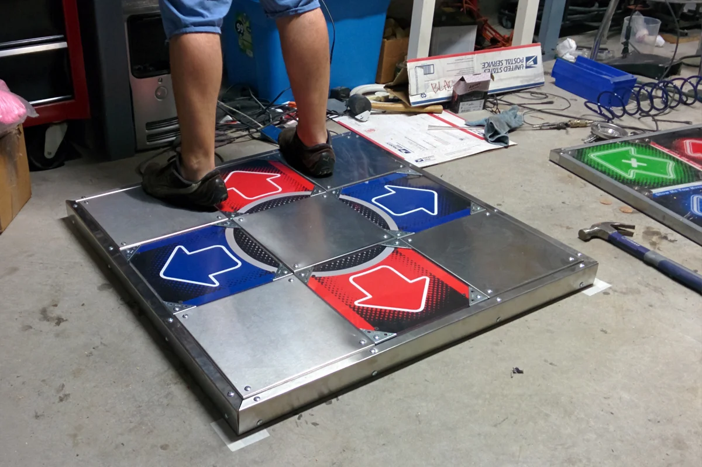
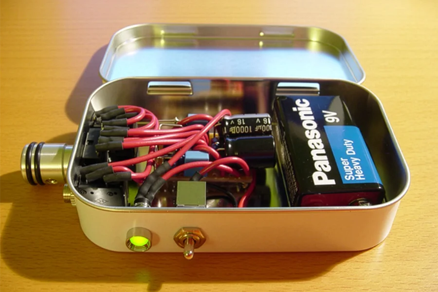